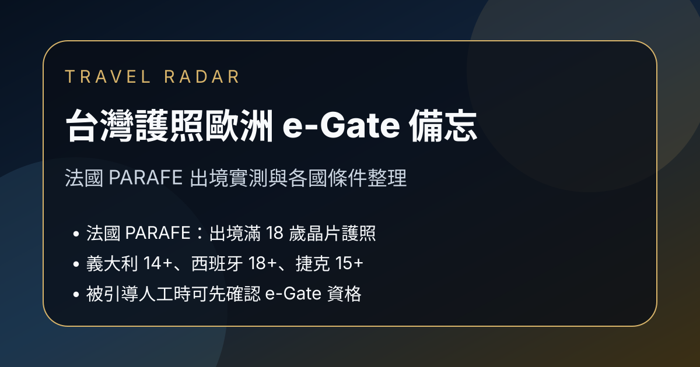

Facebook｜點數旅人：台灣護照在法國 PARAFE 電子快速通關出境備忘

一句話摘要
Facebook「點數旅人」分享台灣護照在法國 PARAFE 電子快速通關的實測經驗：近期在法國機場出境時，若被引導到人工查驗，可主動告知護照可使用 e-Gate；貼文並整理法國、義大利、西班牙、捷克等歐洲國家的台灣晶片護照快速通關條件與年齡限制。
來源脈絡
- 來源：Facebook「點數旅人」公開照片貼文。
- 分享連結：https://www.facebook.com/share/18eLL29wXz/?mibextid=wwXIfr
- Canonical：https://www.facebook.com/PointsExcursionist/posts/pfbid0t8SriYeXYDHzBpdHoKeR8NC8EQB5bV5cTtstG7tXiBLu3zYx2jZvD7fUnPUHsvCTl
- 可見互動數：約 232 個心情、14 則留言、32 次分享。
- 圖片：貼文註明取自里昂機場官網；公開頁面顯示為 PARAFE／電子通關閘門示意圖。
- 注意：本文保存為旅行備忘；實際出入境資格、年齡限制、機場適用航廈與系統開放狀態，仍需以出發前官方資訊與現場指示為準。
核心提醒
- 法國電子快速通關系統稱為 PARAFE；貼文實測情境是法國機場出境。
- 若持台灣晶片護照在機場被引導到「所有護照」人工查驗，可先向現場人員確認：「My passport works for e-Gate」。
- 作者實測原本走 Sky Priority，仍被導向人工查驗；改走旁邊電子查驗後約 30 秒通過。
- 法國目前依貼文整理可能主要是出境可用；入境是否可用不確定，不宜直接假設。
貼文整理的歐洲 e-Gate 條件
法國 PARAFE
- 使用條件：晶片護照。
- 年齡限制：貼文稱入境需滿 12 歲、出境需滿 18 歲。
- 備註：目前可能只有出境可用；現場人員未必熟悉台灣護照適用狀態。
義大利 e-Gate
- 使用條件：晶片護照。
- 年齡限制：滿 14 歲可使用。
西班牙 ABC
- 使用條件：晶片護照。
- 年齡限制：滿 18 歲可使用。
捷克 EasyGO
- 使用條件：晶片護照。
- 年齡限制：滿 15 歲可使用。
其他國家提醒
- 荷蘭：貼文稱目前非歐盟護照入境仍不行。
- 德國：需事先申請註冊 EasyPASS-RTP。
- 英國：需符合條件並付費申請 RTS 成功後才能走 eGate。
- EES 使用國與 e-Gate 開放資格不是同一件事：有 EES 不代表台灣護照能直接走電子通關。
旅行備忘
- 歐洲出境尖峰時段人工查驗可能大排長龍；若旁邊 e-Gate 無人，可先確認資格，不要直接認命排人工。
- 同行者若有兒童或未成年人，務必先確認各國年齡限制。
- 若從 CDG 不同航廈出境，留言區有人提到 T1 與 T2 經驗可能不同；出發前可再查最新旅客回報與官方頁面。
原文摘錄
台灣護照在法國，已經可以走電子快速通關了（目前可能只有出境可以，入境可能不行）
很多人可能還不知道，甚至連機場人員都不一定知道，因為這個對大家來說還算很新。
法國的電子快速通關叫做 PARAFE。在機場時，你有高機率會被引導到「所有護照」的人工查驗（這個會排隊很久）。這時候可以先跟工作人員說：「My passport works for e-Gate」。
我今天已經走 Sky Priority 通道（視會籍或艙等可進入），原本以為會比較快，但是進去之後，工作人員看完護照仍然引導到人工查驗。
結果才發現 Sky Priority 的人工查驗護照也很多人排隊，而且隊伍幾乎沒在動。但旁邊的電子查驗那排完全沒人，我們就直接走過去，花了 30 秒就通過了。
其他國家：
同樣可以使用電子護照查驗的國家，我這趟還去了義大利跟西班牙，另外華航、星宇都有飛的捷克也可以。
注意事項：
有使用 EES（出入境系統）的國家目前有 29 國，但不代表台灣護照在這些國家能直接走 e-Gate：
• 荷蘭：目前非歐盟護照入境仍不行。
• 德國：需事先申請註冊 EasyPASS-RTP 才能走。
• 英國：需符合條件並付費申請 RTS 成功後才能走 eGate。
• 法國 (PARAFE)：根據官網，目前可能只有出境可以使用，必須使用晶片護照，且有年齡限制（入境需滿 12 歲、出境需滿 18 歲）
• 義大利 (e-Gate)：晶片護照滿 14 歲可使用
• 西班牙 (ABC)：晶片護照滿 18 歲可使用
• 捷克 (EasyGO)：晶片護照滿 15 歲可使用
如果你近期有歐洲行程，建議可以先把這篇存起來。或分享給近期要飛歐洲的朋友。
到機場如果被引導去人工通關，也不要認命排隊，先確認一下自己是不是可以走電子通關，搞不好你可以使用旁邊那條沒人的快速通道。
大家還知道有什麼地方是台灣護照可以快速通關的嗎？歡迎留言分享，大家一起整理出一份台灣護照快速通關地圖。
註：圖片取自里昂機場官網，因為移民官那邊通常都不能拍照。
原始連結
Facebook 分享連結：
https://www.facebook.com/share/18eLL29wXz/?mibextid=wwXIfr
Facebook canonical：